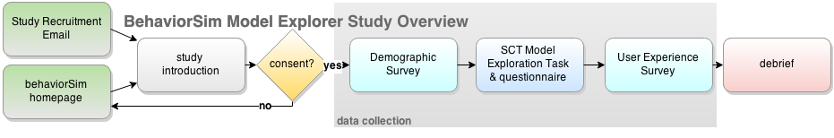
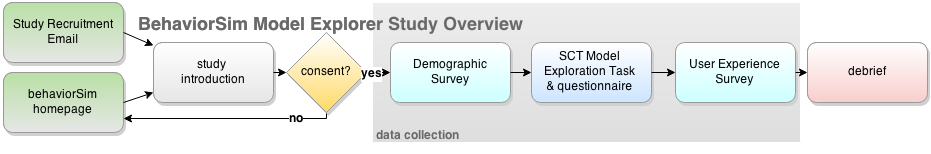

This study is designed to assess the usability of the behaviorSim Model Building Tool. This tool has three aims:
- Improve user's usage and understanding of system dynamics.
- Make formulation of dynamical models of human behavior more accessible.
- Enable sharing and extending of existing models.
The follow flow chart outlines the tasks we are asking you to complete:


- Introduction - this page!
- Demographic Survey - [5min] A few questions about your academic history and interests.
- Pre-test & Post-test - [10min] Questions we use to see what you learn from the tool.
- Model Building Task - [15min] Attempt to build a model based on a text description using the BehaviorSim Model Building Tool.
- User Experience Survey - [10min] Questions about your opinion of the tool.
Please contact tylarmurray@mail.usf.edu with any questions or concerns regarding this study.
By clicking on the button below you consent to participate in the study and to have your data collected and used
by the behaviorSim team to guide development and for research publication.
I Consent
I Consent